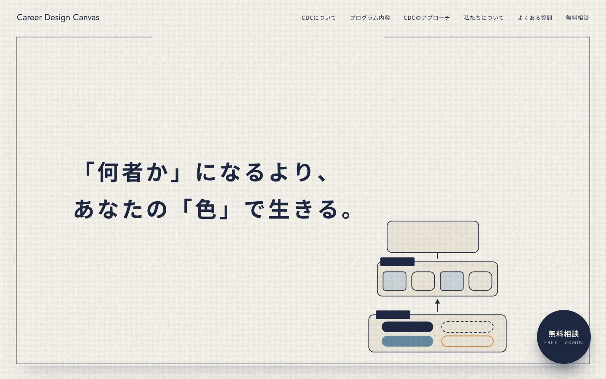

参考サイトの特徴は、①大きな言葉と情報を上にまとめ、②その下に横長の色の面を置き、③色が粒子のざらつきを持ってゆっくりうねること。CDCでは VI の色（紺・青・うすい青・ベージュ・オレンジ）に置きかえ、布の目をかぶせて「キャンバスに絵の具がしみた」質感にしています。言葉は変えていません。

額縁の上半分に言葉、下半分を色の帯にする。帯の中で色がゆっくり流れる。図解の部品は出さない。※「自己理解からはじめる〜」の一行と英字の三語は、見え方を確かめるための仮置きです（文言は石倉さん・齋藤さんが決める）。
額縁の中ぜんぶに色がにじむ。言葉のある左側は淡い色（うすい青・ベージュ）にして、紺の文字が読めるようにする。濃い紺と青、オレンジは右下に寄せる。
地はいまの布の色のまま。三段の図解の部品の中にだけ、流れる色がしみている。ページの他のところ（脇の図解・部品）とも合わせやすい。